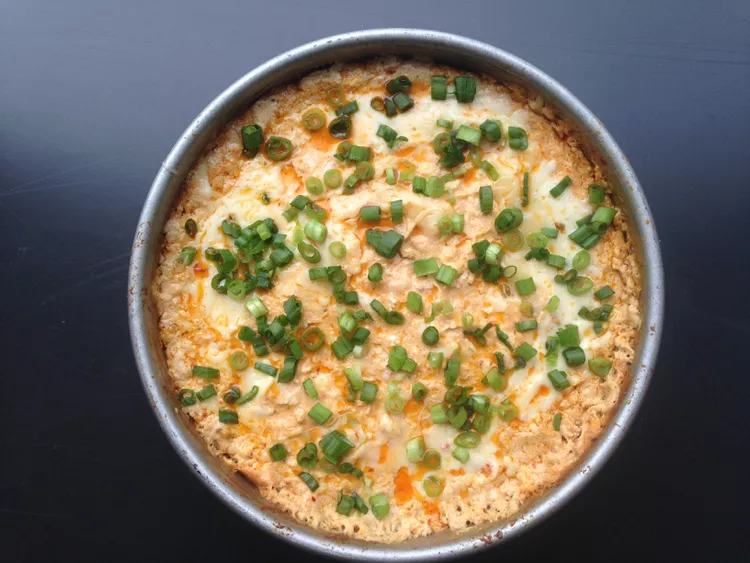

return to Homepage
Baked Buffalo Chicken Dip
In 3 simple steps create a tasty and spicy dip in 25 minutes, perfect for parties!
Prep Info
- Prep Time: 10 minutes
- Bake Time: 15 minutes
- servings: 8
- Total Time: 25 minutes
Nutrition
- Calories: 407
- Fat: 36g
- Carbs: 3g
- Protein: 17g
Piepig's Review
Pending Review, check back soon.
Ingredients
- 3 cups diced cooked rotisserie chicken
- 2 (8 ounce) packages cream cheese, softened
- 3/4 cup hot pepper sauce (such as Frank's RedHot)
- 1/2 cup shredded pepper Jack cheese
- 1/2 cup blue cheese dressing
- 1/2 cup crumbled blue cheese
- 1/2 teaspoon seafood seasoning (such as Old Bay)
- 2 pinches cayenne pepper, divided
- 2 tablespoons shredded pepper Jack cheese
- 1 tablespoon thinly sliced green onions (Optional)
Directions
- Preheat the oven to 400 degrees F (200 degrees C).
- Stir chicken, cream cheese, hot pepper sauce, 1/2 cup pepper Jack, blue cheese dressing, blue cheese, seafood seasoning, and a pinch cayenne pepper together in a large bowl until well combined. Transfer to a 9-inch round baking dish and smooth into an even layer. Sprinkle 2 tablespoons pepper Jack over top.
- Bake in the preheated oven until lightly browned on top, 15 to 20 minutes. Remove from the oven, add another pinch cayenne pepper, and sprinkle green onions over top.

Return to Homepage